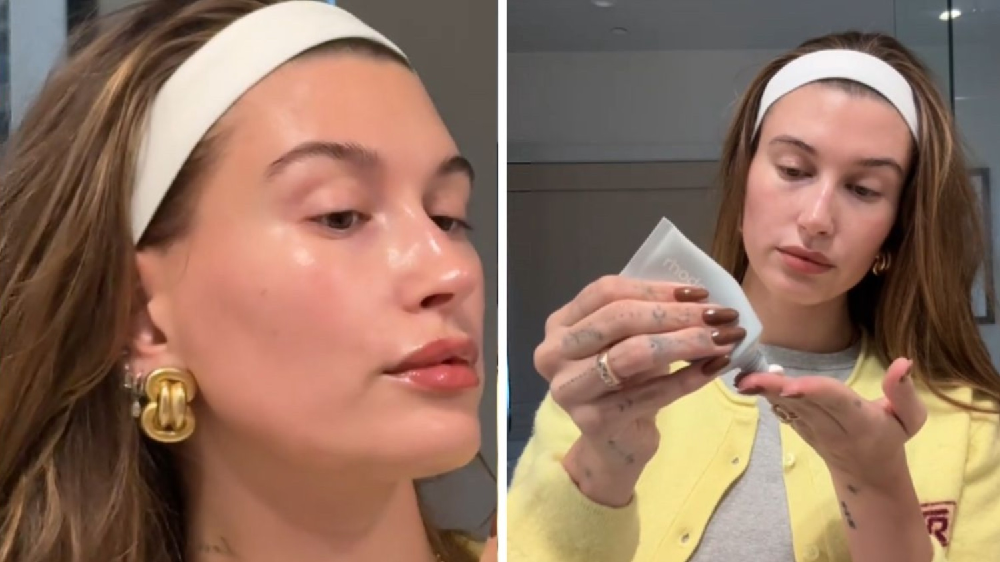

Brands and Trend Influence
This section looks at how brands use TikTok-driven aesthetics in their marketing and visual identity. While these trends begin as styles and forms of self-expression, they also shape how brands present themselves to Gen Z audiences. When a brand reflects an aesthetic that feels familiar or popular on TikTok, it can seem more current, relatable, and appealing.
These examples show that aesthetics like Y2K, coquette, and clean girl do not just influence what Gen Z wears or posts online. They also influence how brands design content, promote products, and connect with consumers in ways that can affect brand perception and purchase behavior.
Canva and the Y2K Aesthetic
Canva is a design platform widely used by students, creators, and brands to make digital content. Because its audience includes many young users, Canva often adapts popular visual trends into its own content. One example of this is its use of Y2K-inspired design elements on TikTok.
In this example, Canva uses bold typography, sparkles, and retro-inspired graphics to reflect the Y2K aesthetic. These design choices make the post feel playful, nostalgic, and visually similar to the trend-based content that Gen Z already engages with on TikTok.
This matters because Gen Z responds to content that feels relevant and native to the platform. When Canva uses a trend like Y2K, it strengthens brand perception by making the company feel more creative, relatable, and connected to internet culture.
Canva post using Y2K-inspired typography and sparkles.
Bershka and the Coquette Aesthetic
Bershka campaign featuring soft colors and feminine styling.
Bershka is a fast-fashion brand that targets a younger audience, making it highly responsive to trends that gain popularity on platforms like TikTok. One of the aesthetics the brand has leaned into is the coquette aesthetic, which emphasizes femininity, softness, and romantic visuals.
In this campaign, Bershka uses light colors, delicate fabrics, and soft styling to reflect the coquette aesthetic. The overall look feels minimal but intentional, creating a romantic and slightly nostalgic feeling that aligns with what many Gen Z users engage with online.
This approach can influence how Gen Z perceives the brand. By reflecting a popular aesthetic, Bershka feels more aligned with current trends and more relevant to its audience.
Rhode and the Clean Girl Aesthetic
Rhode closely reflects the clean girl aesthetic through its focus on glowing skin, minimal makeup, and simple routines. Because the brand is strongly connected to Hailey Bieber, who is often associated with this aesthetic, Rhode is a clear example of how a trend can shape brand identity.
The glowing skin, minimal makeup, simple headband, and neutral styling all reflect beauty content that performs well on TikTok. The image does not just sell a product. It sells the look and lifestyle that many Gen Z consumers want to recreate.
By aligning itself closely with this aesthetic, Rhode feels aspirational but still attainable. This can strengthen brand perception and increase purchase intention because consumers are not only buying skincare, but also buying into the image associated with it.

Rhode skincare content showing glowing skin and minimal makeup.